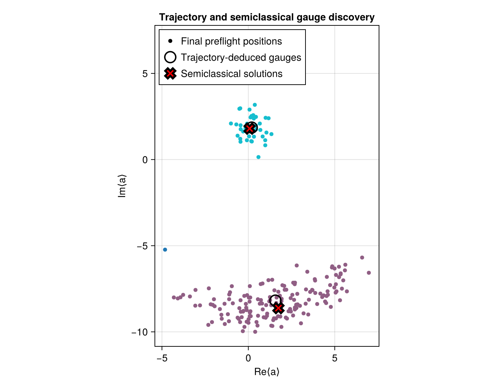
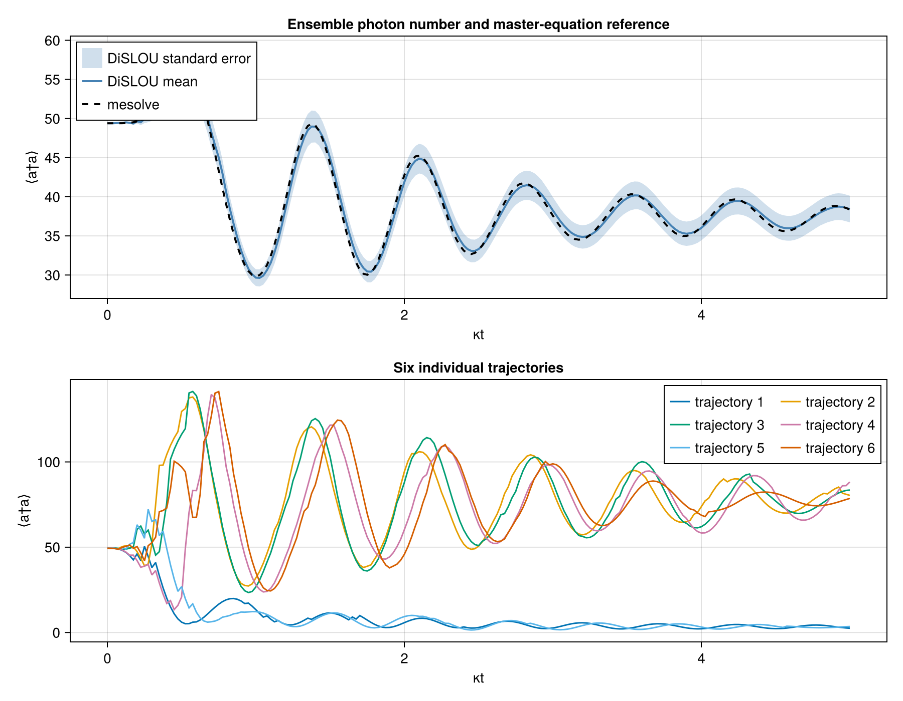
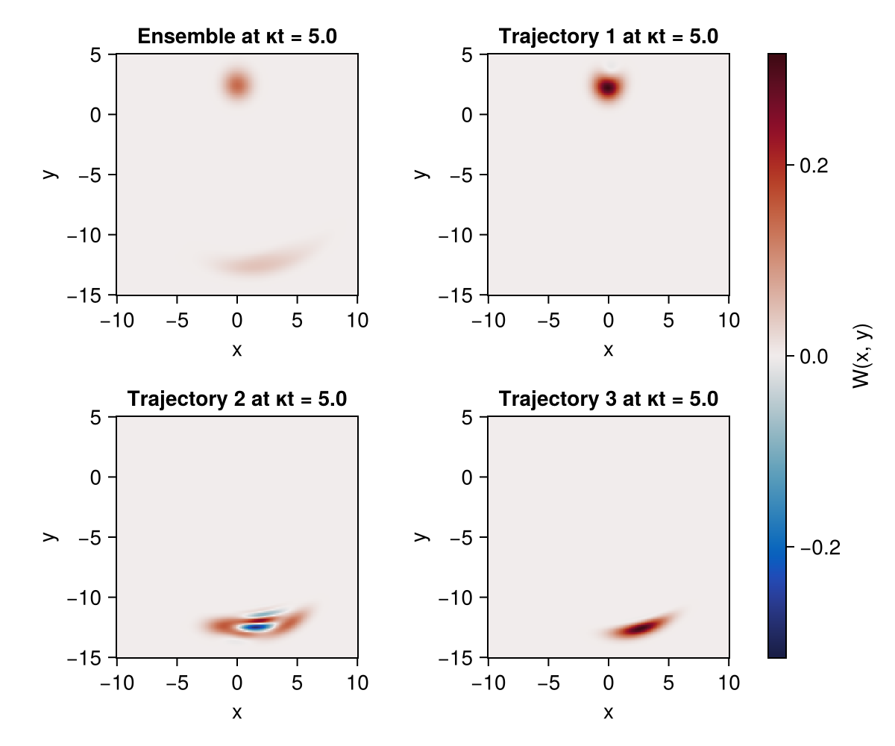
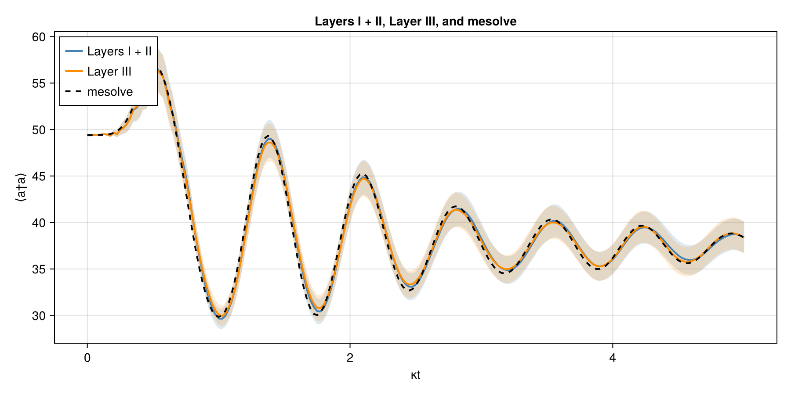

Driven Kerr resonator
Follow a driven, lossy Kerr resonator from an unstable initial state toward its two metastable branches. We will discover the optimal gauges, compare the trajectory dynamics with a master-equation solution, inspect the Wigner functions, and enable the reduced propagation of Layer III.
Run the code blocks in order in one Julia session, starting from the repository root. See Running the examples for the environment setup.
- Prepare the environment
- Load the packages
- Define the Kerr model
- Discover the stable gauges and choose the initial state
- Compare with trajectory-based gauge discovery
- Evolve the ensemble and a reference solution
- Inspect ensemble and trajectory Wigner functions
- Enable Layer III
Prepare the environment
import Pkg
repo_root = pwd() # Start Julia from the repository root.
examples_dir = joinpath(repo_root, "examples")
Pkg.activate(examples_dir)
Pkg.develop(Pkg.PackageSpec(path=repo_root))
Pkg.instantiate()Load the packages
QuantumToolbox supplies the operators and reference solver; DiSLOUTrajectories.jl supplies gauge discovery and trajectory propagation. Clustering and QuantumCumulants enable the two discovery methods, and CairoMakie draws the figures.
using CairoMakie
using Clustering
using DiSLOUTrajectories
using QuantumToolbox
import QuantumCumulantsDefine the Kerr model
The rotating-frame Hamiltonian and physical collapse operator are
\[H=-\Delta a^\dagger a+\frac{K}{2}a^{\dagger 2}a^2 +i(\varepsilon a^\dagger-\varepsilon^*a), \qquad C=\sqrt{\kappa}\,a.\]
Use a Fock cutoff of $N=190$ and the bistable drive $\varepsilon=22.217$. With $\kappa=1$, the time values below also represent $\kappa t$. Define the model as functions so the same expressions work with the symbolic mode used for semiclassical discovery and with QuantumToolbox's objects.
N = 190
κ, Δ, K = 1.0, 13.0, 0.2
ε = 22.217 + 0im
# H (Eq. 7).
kerr_hamiltonian(mode) =
-Δ * adjoint(mode) * mode +
(K / 2) * adjoint(mode)^2 * mode^2 +
im * (ε * adjoint(mode) - conj(ε) * mode)
# C = √κ a (Eq. 7).
kerr_collapse_operators(mode) = [sqrt(κ) * mode]Discover the stable gauges and choose the initial state
Pass the model functions to semiclassical discovery. limits bounds the occupation searched for fixed points. Stable roots become gauge centers, while any unstable root remain available in the diagnostics.
sc = discover_gauges(
kerr_hamiltonian,
kerr_collapse_operators;
method=:semiclassical,
limits=(N - 1,),
)
α_saddle = only(sc.diagnostics.rejected)Now construct the operators and a coherent initial state at that saddle. This starts the evolution away from either stable center. Store the discovered shifts for the later trajectory solves.
a = destroy(N)
n_op = a' * a
H = kerr_hamiltonian(a)
c_ops = kerr_collapse_operators(a)
ψ0 = coherent(N, α_saddle)
Z = sc.shifts
(; stable_centers=sc.centers, unstable_saddle=α_saddle)(stable_centers = ComplexF64[0.0726626169192963 + 1.7953859931208251im 1.7414229459815702 - 8.622402989013787im], unstable_saddle = 1.1116019736702343 + 6.939543439607241im)The stable centers are near $0.0727+1.7954i$ and $1.7414-8.6224i$. The rejected fixed point near $1.1116+6.9395i$ is the unstable saddle used for the initial coherent state. Z contains collapse-operator shifts $\zeta^{(g)}=-\sqrt{\kappa}\alpha_g$.
Compare with trajectory-based gauge discovery
As a second way to locate the branches, we can evolve 200 preliminary trajectories and cluster their terminal amplitudes. The saved output reports two clusters and three semiclassical fixed points: the latter count includes the unstable saddle.
trajectory_gauges = discover_gauges(H, c_ops;
method=:trajectories,
mode_ops=[a],
mode_dims=[N],
discovery_time=3.0,
seed_radii=[sqrt(N - 1)],
cluster_scales=[1.0],
step=5.0,
nseeds=200,
terminal_window=0.0,
dbscan_radius=1.5,
min_neighbors=10,
min_weight=0.02,
seed=1,
ensemblealg=:threads,
)
preflight_positions = vec(trajectory_gauges.diagnostics.terminal_means)
preflight_labels = trajectory_gauges.diagnostics.labels
trajectory_centers = vec(trajectory_gauges.centers)
semiclassical_points = vec(sc.diagnostics.roots)
(; preflight_trajectories=length(preflight_positions),
trajectory_gauges=length(trajectory_centers),
semiclassical_solutions=length(semiclassical_points))(preflight_trajectories = 200, trajectory_gauges = 2, semiclassical_solutions = 3)Plot the preliminary trajectory endpoints, the cluster centers, and all semiclassical fixed points in the complex-amplitude plane.
fig_gauges = Figure(size=(700, 550))
ax_gauges = Axis(fig_gauges[1, 1];
xlabel="Re⟨a⟩", ylabel="Im⟨a⟩",
title="Trajectory and semiclassical gauge discovery",
aspect=DataAspect())
scatter!(ax_gauges, real.(preflight_positions), imag.(preflight_positions);
color=preflight_labels, colormap=:tab10, markersize=8,
label="Final preflight positions")
scatter!(ax_gauges, real.(trajectory_centers), imag.(trajectory_centers);
marker=:circle, markersize=22, color=:transparent,
strokecolor=:black, strokewidth=2,
label="Trajectory-deduced gauges")
scatter!(ax_gauges, real.(semiclassical_points), imag.(semiclassical_points);
marker=:xcross, markersize=20, color=:red, strokewidth=3,
label="Semiclassical solutions")
axislegend(ax_gauges; position=:lt)
fig_gauges
The two endpoint clusters identify the dim and bright branches. Compare their centers with the stable semiclassical roots: finite pilot trajectories and quantum fluctuations need not give exactly the same centers but in this case they are very close.
Evolve the ensemble and a reference solution
First use mesolve for the deterministic master-equation reference, then dislou_solve for 512 trajectories with Layers I and II. Both receive the same physical H, c_ops, initial state, and photon-number observable. Do not shift the physical operators yourself: DiSLOU applies the gauge transformation.
Save ensemble states at three times and retain individual trajectories so we can inspect their observables and Wigner functions below.
tlist = collect(range(0.0, 5.0; length=201))
snapshot_times = [0.0, 2.5, 5.0]
ntraj = 512
ensemble_seed = 20260829
mesolve_sol = mesolve(H, ψ0, tlist, c_ops;
e_ops=[n_op],
progress_bar=false,
reltol=1e-8,
abstol=1e-10,
)
sol = dislou_solve(H, ψ0, tlist, c_ops;
e_ops=[n_op],
gauge_set=Z,
ntraj=ntraj,
ensemblealg=:threads,
seed=ensemble_seed,
saveat=snapshot_times,
save_trajectories=true,
save_final_states=true,
)DiSLOUSolution(ntraj=512, Ne=1, Nt=201, total_jumps=36950)Read the photon-number dynamics
expect_mean(sol) and expect_sem(sol) return the ensemble mean and its standard error for the first observable, here photon number. Plot those against mesolve, then show six individual trajectories below. The shaded band describes uncertainty in the ensemble mean.
n_mean = real.(expect_mean(sol))
n_sem = expect_sem(sol)
n_mesolve = real.(mesolve_sol.expect[1, :])
selected_trajectories = 1:6
fig_n = Figure(size=(900, 700))
ax_mean = Axis(fig_n[1, 1]; xlabel="κt", ylabel="⟨a†a⟩",
title="Ensemble photon number and master-equation reference")
band!(ax_mean, tlist, n_mean .- n_sem, n_mean .+ n_sem;
color=(:steelblue, 0.25), label="DiSLOU standard error")
lines!(ax_mean, tlist, n_mean;
color=:steelblue, linewidth=2, label="DiSLOU mean")
lines!(ax_mean, tlist, n_mesolve;
color=:black, linestyle=:dash, linewidth=2, label="mesolve")
axislegend(ax_mean; position=:lt)
ax_traj = Axis(fig_n[2, 1]; xlabel="κt", ylabel="⟨a†a⟩",
title="Six individual trajectories")
for trajectory in selected_trajectories
lines!(ax_traj, tlist, real.(sol.trajectory_expect[1, trajectory, :]);
label="trajectory $trajectory")
end
axislegend(ax_traj; position=:rt, nbanks=2)
fig_n
The ensemble follows the oscillatory relaxation of the master-equation reference, while individual trajectories separate toward the two branches, clearly showing the bistable nature of the model.
Inspect ensemble and trajectory Wigner functions
At the final saved time, compare the reconstructed ensemble state with trajectories 1–3. These are different views of the same simulation: the ensemble combines all trajectories, while each other panel shows one conditional state.
xvec = collect(range(-10.0, 10.0; length=201))
yvec = collect(range(-15.0, 5.0; length=201))
time_index = length(snapshot_times)
scaled_snapshot_time = κ * snapshot_times[time_index]
wigner_states = (
sol.states[time_index],
sol.trajectory_states[1, time_index],
sol.trajectory_states[2, time_index],
sol.trajectory_states[3, time_index],
)
wigner_values = map(
state -> wigner(state, xvec, yvec),
wigner_states,
)
wigner_plots = transpose.(wigner_values)
for W in wigner_plots
@assert size(W) == (length(xvec), length(yvec))
peak = Tuple(argmax(abs.(W)))
# @assert 1 < peak[1] < length(xvec)
# @assert 1 < peak[2] < length(yvec)
end
color_limit = maximum(maximum(abs, W) for W in wigner_values)
panel_positions = ((1, 1), (1, 2), (2, 1), (2, 2))
panel_titles = (
"Ensemble at κt = $scaled_snapshot_time",
"Trajectory 1 at κt = $scaled_snapshot_time",
"Trajectory 2 at κt = $scaled_snapshot_time",
"Trajectory 3 at κt = $scaled_snapshot_time",
)
fig_w = Figure(size=(600, 500))
heatmaps = Any[]
for (position, title, W) in zip(panel_positions, panel_titles, wigner_plots)
row, column = position
ax = Axis(fig_w[row, column];
xlabel="x", ylabel="y", title, aspect=DataAspect())
push!(heatmaps, heatmap!(ax, xvec, yvec, W;
colormap=:balance, colorrange=(-color_limit, color_limit)))
end
Colorbar(fig_w[:, 3], first(heatmaps); label="W(x, y)")
fig_w
The ensemble panel contains contributions from both branches. while the three individual panels show which region each selected trajectory occupies at the final time: they are all close to one of the metastable states.
Enable Layer III
Repeat the solve with the same state, gauges, trajectory count, and seed, adding the reduced-space options. The entries of layer3_sizes follow the gauge columns: $m^{(-)}=20$ for the dim branch and $m^{(+)}=60$ for the bright branch.
The residual tolerance $r_{\rm tol}=10^{-4}$ controls acceptance of a projection into a reduced space, as in Eq. (21). The solver falls back to the full basis when the projection residual goes above it.
layer3_sol = dislou_solve(H, ψ0, tlist, c_ops;
e_ops=[n_op],
gauge_set=Z,
ntraj=ntraj,
ensemblealg=:threads,
seed=ensemble_seed,
layer3=true,
layer3_sizes=[20, 60],
residual_tolerance=1e-4,
)DiSLOUSolution(ntraj=512, Ne=1, Nt=201, total_jumps=40523)Overlay the Layer III result with Layers I and II and mesolve, keeping the standard-error bands for both ensembles.
n_layer3 = real.(expect_mean(layer3_sol))
n_layer3_sem = expect_sem(layer3_sol)
fig_validation = Figure(size=(900, 450))
ax_validation = Axis(fig_validation[1, 1];
xlabel="κt", ylabel="⟨a†a⟩",
title="Layers I + II, Layer III, and mesolve")
band!(ax_validation, tlist, n_mean .- n_sem, n_mean .+ n_sem;
color=(:steelblue, 0.18))
band!(ax_validation, tlist,
n_layer3 .- n_layer3_sem, n_layer3 .+ n_layer3_sem;
color=(:darkorange, 0.18))
lines!(ax_validation, tlist, n_mean;
color=:steelblue, linewidth=2, label="Layers I + II")
lines!(ax_validation, tlist, n_layer3;
color=:darkorange, linewidth=2, label="Layer III")
lines!(ax_validation, tlist, n_mesolve;
color=:black, linestyle=:dash, linewidth=2, label="mesolve")
axislegend(ax_validation; position=:lt)
fig_validation
The comparison confirms that the reduced and full-space ensemble curves track the same reference dynamics.
Continue with the two-mode ideal cat to apply the same workflow to multiple modes and jump operators.